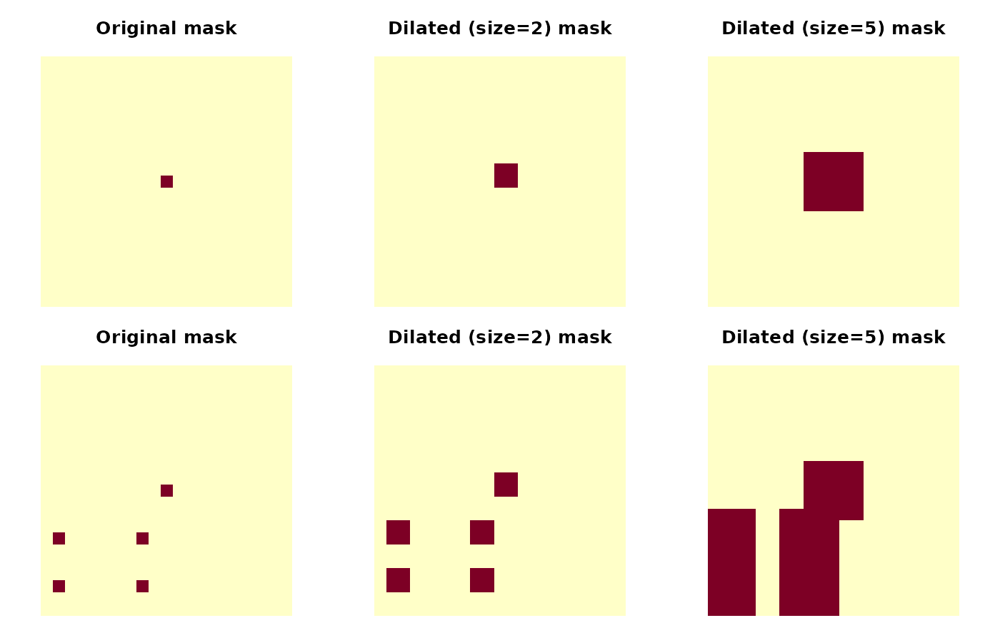

Grow volume mask
Examples
oldpar <- par(mfrow = c(2,3), mar = c(0.1,0.1,3.1,0.1))
mask <- array(0, c(21,21,21))
mask[11,11,11] <- 1
image(mask[11,,], asp = 1,
main = "Original mask", axes = FALSE)
image(grow_volume(mask, 2)[11,,], asp = 1,
main = "Dilated (size=2) mask", axes = FALSE)
image(grow_volume(mask, 5)[11,,], asp = 1,
main = "Dilated (size=5) mask", axes = FALSE)
mask[11, sample(11,2), sample(11,2)] <- 1
image(mask[11,,], asp = 1,
main = "Original mask", axes = FALSE)
image(grow_volume(mask, 2)[11,,], asp = 1,
main = "Dilated (size=2) mask", axes = FALSE)
image(grow_volume(mask, 5)[11,,], asp = 1,
main = "Dilated (size=5) mask", axes = FALSE)

par(oldpar)